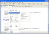
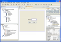

{kind=link}
Voici un rapide compte rendu des nouvelles caractéristiques reprises ci-dessus, avec des copies d'écran lorsque c'est possible. Cliquez sur les copies d'écran pour avoir une image en taille réelle.
Themes |
| Details Nouvelles Fonctionnalités | |
|
Voici un rapide compte rendu des nouvelles caractéristiques reprises ci-dessus, avec des copies d'écran lorsque c'est possible. Cliquez sur les copies d'écran pour avoir une image en taille réelle. |
|
Système de Projet Basé sur Apache Ant
Aperçu: Description:
- Apache Ant est utilisé pour gérer le développement et le déployement de l'application
- Les MétaDonnées du Projet sont dans les scripts Ant
- Capacité de construire les applications en dehors de l'EDI en utilisant Ant, pas d'actions spéciales (Export vers Ant) requises
- Support Intégré pour les tests unitaires (JUnit)
- Sources Utilisateurs sont présentés dans le contexte de leur projet d'une façon logique
- L'utilisateur peut travailler avec de multiples projets en même temps
- Tout ce qui est décrit ci-dessus est out-of-the box, pas de manipulation à effectuer de la part de l'utilisateur
Un système de projet completement nouveau basé sur Apache Ant, un outil standard, open source utilisé pour les compilations et déployement d'applications en utilisant les technologies Java. Ce nouveau système aura une architechture ouverte, que des modules tiers pourront étendre pour supporter les types d'applications Java actuelles et futures. NetBeans incluera les types de projet pour les applications de bureau J2SE et les applications web deux-tiers (JSP, Servlettes, Tag libraries) à l'origine. Les utilisateurs ne devront pas craindre d'être bloqué dans un système de projet ou de déployement propriétaire. Les utilisateurs ordinaires n'auront pas à connaitre Ant pour utiliser le système, mais toute la puissance de Ant est accessible pour les utilisateurs Ant avancés.
Aperçu: Description:
- Renommer Classe/Méthode/Champ
- Déplacer une Classe
- Renommer un Paquetage
- Modifier la signature d'une méthode
- Champs Encapsulé
Le Refactoring dans NB 4.O va fournir des fonctionnalités comme Renommer (Classe/Méthode/Champs), Déplacer Classe, Renommer Paquetage, Modifier signature méthode, champs encapsulé, Trouver Référence/Déclaration et Se Rendred à l'implémentation du super.
 full size 1 full size 2 Améliorations Développement d'Application Web
Aperçu: Description:
- Type de Projet Application Web
- Support amélioré pour les deux applications web deux-tiers que sont J2EE 1.3 (Servlettes 2.3 et JSP 1.2) et J2EE 1.4 (Servlette 2.4 et JSP 2.0)
Le nouveau système de projet incluant le type de projet d'Application Web (décrit ci-dessus) est la caractéristique principale pour les développeurs d'applications web. Il devrait permettre le développement d'application en utilisant une structure naturelle et pratique, gestion plus aisée des bibliothèques et fournit plus de capacité de déployement intégré pour les applications web y compris la création d'archives war. NetBeans 4.0 aura également un support étendu pour les deux standards J2EE 1.3 et J2EE 1.4. De plus, NetBeans 4.0 contiendra des améliorations dans les domaines de l'édition de JSP, le déploiement, le débogage, la gestion de serveurs, le support pour les dernières versions de Tomcat, et autres.
Aperçu: Description:
- L'EDI tournera sous la version finale du J2SE 1.5
- Support de la nouvelle grammaire du langage dans l'éditeur
Une fois le J2SE 1.5 sorti, vous serez capable d'utiliser la nouvelle grammaire du langage, comme enums, génériques, ou les annotations de méta-données pour concevoir et éditer votre application sans configuration supplémentaire.
Des fonctionnalités comme annotation d'erreurs (soulignement d'erreur) ou code folding fonctionneront avec les sources 1.5 et l'éditeur reconnaitra et coloriera les nouveaux mots-cléfs du langage.
Aperçus: Description:
- Nouvel API Débogueur
- Améliorations Utilisation et Productivité
Le Core Debugger est une partie importante de l'EDI qui peut être étendu par d'autres modules comme le débogueur JSP. La nouvelle API du débogueur sera une avancée majeure en terme d'extensibilité architechturale, maintenabilité générale, et testabilité, ainsi que la fourniture d'un meilleur model de threading, et le support complet du JSR45.
En plus de cela, il y a également plein de nouvelles fonctionnalités qui permettent un débogage plus aisé d'applications complexe, comme le step filtering, threads & callstack view filtering, ainsi que permettre aux threads de s'arrêter à des points d'arrêt indépendemment. Le débogueur supportera également les nouvelles fonctionnalités du langage JDK 1.5. Il devrait donc être possible d'utiliser la nouvelle grammaire dans l'écriture des expressions pour les points d'arrêts conditionnels et les surveillants (watches).
Amélioration du Système de Fenêtre

full sizeAperçu: Description:
- Vues/Editeurs Multiple par objet: l'utilisateur peut facilement basculer entre les différentes vues d'un même objet (par exemple source java/Editeur Visuel pour les GUIs, XML brut/Editeur visuel pour le descripteur de déployement), pas besoin d'ouvrir une nouvelle fenêtre pour chaque vue et de les rechercher tout le temps
- Alignement Visuel pour Aqua LookAndFeel sur MacOS X, et les thèmes natifs GNOME sur Unices (GTK LookAndFeel)
- fenêtre s'auto-cachant (coulissante)
D'autres Améliorations sur le système de fenêtre même après sa réécriture complète dans NetBeans 3.6.
Description: "Installation maline" donnant la possibilté aux utilisateurs de sélectionner des ensembles de fonctionnalités qu'ils ont besoin pour leur développement. Durant l'installation, l'utilisateur a l'option de sélectionner une ou plusieurs technologie (bureau, applications web, mobiles).
Veuillez nous donner vos avis/commentaires sur la list de discussion nbdiscuss - inscrivez-vous à https://netbeans.org/community/lists/top.html, ou poster via NNTP news://news.gmane.org/gmane.comp.java.netbeans.general.
{kind=link}
{kind=link}
{kind=link}